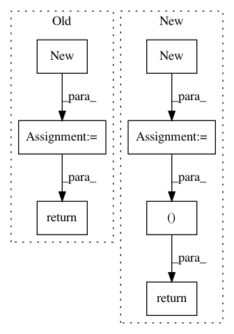

314ee5916b0427e3cd27e017265e34d1b22da48f,torch_geometric/nn/functional/spline_gcn/spline_gpu.py,SplineWeightsGPU,forward,#SplineWeightsGPU#Any#,70
Before Change
_, M_in, M_out = weight.size()
k_max = self.amount.size(1)
output = input.new(input.size(0), M_out)
num_threads = output.numel()
with torch.cuda.device_of(input):
f = load_kernel(
"spline_weights_kernel",
_spline_weights_kernel,
Dtype=Dtype(input),
num_threads=num_threads,
M_in=M_in,
M_out=M_out,
k_max=k_max)
f(block=(CUDA_NUM_THREADS, 1, 1),
grid=(GET_BLOCKS(num_threads), 1, 1),
args=[
input.data_ptr(),
weight.data_ptr(),
output.data_ptr(),
self.amount.data_ptr(),
self.index.data_ptr()
],
stream=Stream(ptr=torch.cuda.current_stream().cuda_stream))
return output
After Change
k_max = self.amount.size(1)
num_edges, d = values.size()
amounts = values.new(num_edges, (self.degree+1)**d)
indices = torch.cuda.IntTensor([num_edges, (self.degree+1)**d])
num_threads = amounts.numel()
with torch.cuda.device_of(input):
f = load_kernel(
"spline_weights_kernel",
self._spline_weights_kernel,
Dtype=Dtype(input),
num_threads=num_threads,
num_edges=num_edges,
k_max=k_max,
degree=self.degree+1,
d=len(self.kernel_size.size()),
k_prod = self.k_prod
)
f(block=(CUDA_NUM_THREADS, 1, 1),
grid=(GET_BLOCKS(num_threads), 1, 1),
args=[
values.data_ptr(),
amounts.data_ptr(),
indices.data_ptr()
],
stream=Stream(ptr=torch.cuda.current_stream().cuda_stream))
return amounts, indices
In pattern: SUPERPATTERN
Frequency: 3
Non-data size: 7
Instances
Project Name: rusty1s/pytorch_geometric
Commit Name: 314ee5916b0427e3cd27e017265e34d1b22da48f
Time: 2017-10-26
Author: janeric.lenssen@tu-dortmund.de
File Name: torch_geometric/nn/functional/spline_gcn/spline_gpu.py
Class Name: SplineWeightsGPU
Method Name: forward
Project Name: NVIDIA/flownet2-pytorch
Commit Name: dafdc9b5cb8fa4c65285aad22b1429549d06d71a
Time: 2018-02-04
Author: chenkaidev@gmail.com
File Name: networks/resample2d_package/functions/resample2d.py
Class Name: Resample2dFunction
Method Name: backward
Project Name: NVIDIA/flownet2-pytorch
Commit Name: dafdc9b5cb8fa4c65285aad22b1429549d06d71a
Time: 2018-02-04
Author: chenkaidev@gmail.com
File Name: networks/channelnorm_package/functions/channelnorm.py
Class Name: ChannelNormFunction
Method Name: backward